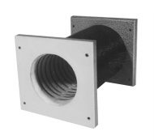
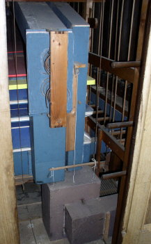

Elektrickı ventilátor je zaøízení, slouící ke stlaèování vzduchu a jeho èerpání do zásobníku, ze kterého jsou pak napájeny všechny spotøebièe vzduchu ve varhanách. V principu nahrazuje funkci èerpacího mìchu a kalkanta (jeho obsluhy) souèasnì. Ventilátor je soudobım varhanáøstvím pouíván jak u novıch nástrojù, tak i pøi modernizaci nástrojù historickıch. V obou pøípadech se dále pouívají i èerpací mìchy (u historickıch nástrojù se zachovávají pùvodní, u novıch se èasto pouívá èerpací mìch se zásobníkem – dvojitı mìch- jako hlavní zásobník vzduchu). Èerpací mìch pak lze pouít jako havarijní zdroj stlaèeného vzduchu v pøípadì poruchy ventilátoru nebo vıpadku elektrické napájecí sítì, u historickıch nástrojù se pouívá èerpací mìch i v pøípadì, chceme-li provozovat hudbu v autentickıch (historickıch) podmínkách. I pøi pouití ventilátoru se ve varhanách neobejdeme bez mìchu, sám ventilátor není schopen dodat potøebné mnoství vzduchu o stálém tlaku v celém rozsahu monıch odbìrù (mnoství spotøebovaného vzduchu kolísá podle poètu zapnutıch rejstøíkù a hrajících píšal v tom kterém okamiku, pohybuje se tak od nuly v pauze hry a po maximum pøi akordické høe v plénu èi tutti). Tlak musí bıt velmi stabilní, jinak se nástroj rozlaïuje a kolísání tlaku má vliv i na intonaci. ádnı zpùsob regulace tlaku pøímo na ventilátoru (napø. regulace otáèek èi škrcení sacího nebo vıtlaèného otvoru) není pro tento úèel dostateènì vhodnı, nebo není schopen zajistit jeho stabilizaci za všech okolností s dostateènou rychlostí. Tlak vzduchu, dodávaného ventilátorem je navíc promìnnı a závislı na velikosti odbìru (pøi nízkém odbìru stoupá, pøi vysokém naopak klesá). U pouitého mìchu je v tomto pøípadì nutná jen funkce rezervoáru – zásobníku (tuto funkci plní napø. horní èást èerpacího mìchu se zásobníkem, samotnı èerpací mìch je pro akumulaèní funkci nepotøebnı). Nové nástroje (a pøedevším vìtší) proto pouívají pøímé spojení ventilátoru se samostatnım zásobníkem (bez èerpacího mìchu). Ten je tvoøen nejèastìji vodorovnım nebo plovákovım mìchem. Základem ventilátoru je obìné kolo s lopatkami, otáèející se uvnitø komory - spirální skøínì, která jej tìsnì obklopuje. Obìné kolo je roztáèeno elektromotorem. Vnìjší vzhled ventilátoru pøibliuje následující fotografie z katalogu: |
Jedná se o ventilátor se svislou osou, kterı není vybaven ádnımi dodateènımi prvky (napø. filtry na vstupu èi klapkou na vıstupu). Rotor ventilátoru (obìné kolo) je nasazen na høídeli pohánìcího motoru a je tvoøen dvojicí kotouèù, mezi kterımi jsou po obvodu pøipevnìny lopatky:
|
Rotor musí bıt velmi dùkladnì vyváen (kadá nevıvaha
by pøi otáèení byla zdrojem vibrací, které by se pøenášely do okolních
konstrukcí a zpùsobovaly by hluk, navíc by vznikající cyklické síly zbyteènì
zvyšovaly opotøebení loisek motoru a sniovaly spolehlivost ventilátoru).
Jako motor se pouívá nejèastìji asynchronní tøífázovı elektromotor s
klecovım rotorem. Jeho elektrické parametry se pøizpùsobují síti v místì
pouití, èasto se musí doplnit o stupòové spouštìní (pøepínání hvìzda
– trojúhelník nebo Soft-Startér) tam, kde je sí pøíliš mìkká (rozbìh
vìtšího ventilátoru trvá i deset sekund, bìhem kterıch motor odebírá a
šestinásobek proudu a sí by mohla bıt neúmìrnì pøetíená). Konstrukce
motoru je mírnì odlišná od motorù pro bìné pouití z dùvodu minimalizace
hluku a vibrací (vìtší zešikmení dráek a jiné rozloení vinutí pro omezení
prostorovıch harmonickıch elektromagnetického pole, kluzná loiska…).
Technologie vıroby je pomìrnì nároèná na pøesnost a zvládá ji v souèasnosti
jen nìkolik málo firem, které dodávají ventilátory pro všechny varhany
(Ventola, Ventus, u nás døíve Rieger). V jejich katalozích najdeme mnoství
konstrukèních provedení ventilátorù se svislou i vodorovnou osou, které
jsou pak dodávány v nìkolika ucelenıch vıkonovıch øadách, lišících se
mnostvím dodávaného vzduchu a jeho tlakem: |
Tvar spirální skøínì ventilátoru se mùe lišit i díky rùznému umístìní vıstupního (vıfukového) otvoru:
Hluk ventilátoru má dvojí pùvod - mechanickı, vznikajicí od vibrujících souèástí ventilátoru (napø. vlivem nevyváenıch rotujících hmot, rezonujících èástí krytu apod.) a aerodynamickı, vznikající pøi proudìní vzduchu uvnitø konstrukce ventilátoru a jeho pøíslušenství. Aerodynamickı hluk lze sníit jen vhodnım návrhem tvaru všech souèástí (pøedevším obìného kola (lopatek) a spirální skøínì. I u dobøe navreného ventilátoru lze ale napø. nevhodnì tvarovanımi kanály pro pøívod èi odvod vzduchu vyvolat rezonanèní pomìry, ve kterıch i drobné zmìny tlaku a turbulence pøi proudìní mohou vést k rozkmitání vduchovıch hmot a zvıšení hluènosti vzduchové soustavy. Úroveò mechanického hluku je závislá na pøesnosti a preciznosti vıroby jednotlivıch souèástí, vyváení rotujících èástí a taky na úrovni obsluhy (údrby - napø. nevhodné mazání mùe bıt pøíèinou zvıšeného opotøebení loisek a zvıšení hluku stejnì jako nevhodná montá, pøi které se do ventilátoru pøenášejí cizí síly, které jej deformují - napø. tìkı vıtlaènı kanál apod.). Hluk ventilátoru je limitujícím faktorem pro jeho pouití v hudebním nástroji, èasto se proto ventilátory kromì vıše uvedenıch konstrukèních úprav opatøují ještì protihlukovım krytem nebo se zavírají do odhluènìné skøíòky: |

Uzavøení ventilátoru do skøíòky na jedné stranì sniuje hluk, na druhé stranì mírnì zhoršuje parametry dodávaného vzduchu (sniuje o nìkolik málo stupòù jeho tlak a mírnì, díky zahøívání vzduchu ve skøíòce od elektromotoru, zvyšuje jeho teplotu). V našich krajích se nejèastìji setkáte s varhanami, které byly elektrickım ventilátorem opatøeny dodateènì pøi elektrifikaci pøíslušné obce (nejèastìji ve ètyøicátıch a padesátıch letech minulého století). Vırobcem ventilátorù byla krnovská firma Rieger, která je zpravidla stavìla v blízkosti nástroje do odhluèòovací døevìné skøíòky, její vzhled zachycuje následující fotografie: |
 |
Vnitøní uspoøádání je patrné z další fotografie.
Ventilátor má vodorovnou osu a otevøenou sací kapsu na vstupním otvoru,
filtry vstupního vzduchu jsou textilní a jsou zabudovány pøímo do sacích
otvorù ve dvíøkách skøíòky: |
 |
Souèástí instalace ventilátoru byl i tento obsáhlı návod k obsluze a údrbì (po kliknutí jeho faksimile ve formátu *.pdf, tady pak jeho textová verze). |
Ventilátor je ke skøíòce pøipevnìn pøes pruné silentbloky
(zpravidla gumové podušky èi hranolky, které pohlcují vibrace a zabraòují
jejich pøenesení do skøíòky) a vıtlaènı kanál je pøipojen pomocí pruného
rukávu, kterı obdobnì brání pøenosu vibrací na vzduchovod a dále do konstrukce
varhan: |
 |
Na fotografii je ventilátor (opìt firmy Rieger), pøipojenı ke vzduchovodùm, tvoøenım prunımi hadicemi. |
Stejnì jako pøi spojení èerpací mìch – zásobník i pøi spojení ventilátor – zásobník se pøi høe objevuje další technickı problém – silnì promìnná spotøeba vzduchu. Kalkant na promìnnou spotøebu reagoval rychlejším èi pomalejším èerpáním tak, aby udrel v mìchu zásobu vzduchu v urèitıch mezích. Stejnou funkci, tj. udrení témìø konstantní zásoby vzduchu v mìchu bìhem hry zajišuje u varhan s ventilátorem zaøízení, plnící funkci regulátoru prùtoku vzduchu z ventilátoru do mìchu – regulaèní záklopka. Pokud bychom spojili ventilátor s mìchem pøímo, situace by byla podobná té, která ji byla popsána v kapitole o èerpacím mìchu se zásobníkem. Ventilátor èerpá vzduch do zásobníku, ten se postupnì naplòuje. Vıkon ventilátoru musí bıt zvolen tak, aby byl schopen zajistit dostatek vzduchu pøi akordické høe v plénu èi tutti. Pokud se hraje jen na sólovı rejstøík nebo je pøi høe pauza, pøebytek vzduchu zásobní mìch rychle pøeplní. Pojistnı ventil ve víku mìchu se otevøe, pøebyteènı vzduch volnì uniká do okolí a jeho další èerpání je v tuto chvíli zbyteèné. Tento stav je neádoucí – pojistnı ventil plní jen funkci pojistky proti roztrení mìchu pøebytkem vzduchu, vzduch unikající pøes jeho malı otvor zpùsobuje znaènı hluk a tlak uvnitø mìchu a tím i v celé soustavì kolísá (mírnì stoupá nad normální pracovní hodnotu). Bylo by sice moné v tuto chvíli pøestat èerpat vzduch tak, jak to dìlá pøi manuálním plnìní kalkant tj vypnout ventilátor ještì pøed pøeplnìním mìchu a opìt jej zapnout, kdy poklesne zásoba vzduchu pod urèitou mez, v praxi je ale tento zpùsob regulace nepouitelnı. Setrvaènost ventilátoru by mìla za následek pøíliš pomalou reakci na zmìny odbìru a navíc neustálé zapínání a vypínání by silnì zkracovalo jeho ivotnost a bylo by zdrojem dalšího hluku. Proto se regulaèní èlen vkládá pøímo do cesty vzduchu z ventilátoru do zásobníku a má podobu regulaèní skøíòky (regulaèní záklopky). Pracuje na principu škrcení (zmenšování prùøezu vıstupního kanálu ventilátoru pomocí clony, zásuvky - šoupátka, aluzií èi roletky). Spojení ventilátoru, pruného rukávu, regulaèního ventilu a zásobníkového mìchu ukazuje následující obrázek. Èárkovanou èarou je znázornìna vazba regulátoru s víkem mìchu, otevírání èi pøivírání škrtícího ventilu je odvozeno právì od pohybu tohoto víka: |
Na tomto i následujících obrazcích je ve funkci zásobníku pouit zásobníkovı mìch (dvojice vodorovnıch mìchù nad sebou), v praxi se èasto setkáme i s mìchem plovákového typu. Regulaèní ventil se vyskytuje v nìkolika konstrukèních variantách, princip funkce je ale vdy obdobnı: |
Nejjednodušší øešení pøedstavuje škrtící klapka v provedení s kovovou èi døevìnou zásuvkou (obdoba tabulového hradítka). Zásuvka se pohybuje ve svislém smìru uvnitø tvarovì upravené komory, vytvoøené na vzduchovodu. O pohyb se stará drát, procházející tìsnì otvorem v horním víku regulaèní skøíòky, kterı je spojenı s víkem mìchu. Na pøedchozím obrázku je øez touto soustavou s prázdnım mìchem (víko mìchu v dolní poloze). Zásuvka je spuštìna do dolní polohy a prùchodu vzduchu regulaèní skøíòkou nic nebrání. Po zapnutí ventilátoru bude proudit vzduch vzduchovodem do mìchu. V mìchu stoupne tlak a k hodnotì, pøi které pøekoná tíhu závaí na víku mìchu a zaène jej zvedat, mìch se bude plnit vzduchem. Souèasnì s víkem mìchu se pøes tahací drát zaène zvedat i zásuvka v regulátoru a postupnì zmenšovat prùøez kanálu pro proudìní vzduchu z ventilátoru do mìchu. V koneèném dùsledku se mìch naplní tak, e víko v horní poloze regulaèní ventil zcela uzavøe. Pøestoe ventilátor pracuje dále, vzduch do mìchu proudit nemùe (pøívod je zcela „zaškrcen“). Budeme-li vzduch z mìchu odebírat, po èase dojde k poklesu jeho víka a škrtící ventil se opìt pootevøe, vzniklım otvorem mùe do mìchu proudit vzduch a doplnit jeho mnoství o odebranou èást. V ideálním pøípadì se bìhem hry na nástroj pohybuje víko mìchu jen v malıch mezích a regulaèní ventil je èásteènì pootevøen tak, e mnoství vzduchu, dodávaného pøes takto vzniklı otvor právì nahrazuje v mìchu vzduch, kterı je hrou spotøebováván. Pøi vìtší spotøebì (hra s více rejstøíky nebo na plnı stroj) se regulaèní ventil otevøe více, pøi malé zase ménì nebo se na èas úplnì uzavøe. Po celou dobu mìch udruje urèitou zásobu vzduchu a co je dùleité – jeho tlak je konstantní a na otevøení regulaèní záklopky nezávislı. Propojení víka mìchu s klapkou pøes drát funguje jako zpìtná vazba v regulované soustavì. |
Pro jednoduchost byl na pøedchozím obrázku vynechán
ještì jeden element v cestì vzduchu z ventilátoru do mìchu, a tím je zpìtnı
ventil (záklopka). Tento ventil je nutnı v pøípadì, je-li mìch vybaven
také èerpacím mìchem a jeho umístìní je patrné z následujících ilustrací: |

Zpìtnı ventil je umístìn hned za regulaèní záklopku
a umoòuje prùchod vzduchu jen ve smìru od ventilátoru do mìchu. Brání
jednak úniku vzduchu z mìchu po vypnutí ventilátoru pøes ventilátor, jednak
umoòuje plnit zásobník manuálnì pomocí èerpacího mìchu kalkováním bez
nutnosti dalších úkonù. Pokud by tento ventil neexistoval, vzduch by pøi
manuálním èerpání z mìchu unikal pøes stojící ventilátor. Ventil není
nezbytnı u varhan bez èerpacích mìchù, èasto se však pouívá i proto,
aby zabránil pùsobení zpìtného tlaku na regulaèní ventil po vypnutí ventilátoru. |
Jiná, èasto pouívaná konstrukce regulaèního ventilu, vyuívá k pøivírání otvoru pro prùchod vzduchu roletku (plát kùe, koenky èi obdobného mìkkého pruného materiálu), navinutou na váleèku. Svislı pohyb váleèku zpùsobuje její rozvinutí èi svinutí na møíku, pøes kterou proudí vzduch. Møíka (svislá ebra) slouí pro mìkkou roletku jako opora, vzhledem k dost velkému prùøezu kanálu pro pøívod vzduchu od ventilátoru do mìchu by se jinak tlakem vzduchu prohıbala a netìsnila by). Na krajích váleèku s roletkou jsou vysoustrueny dráky, ve kterıch jsou navinuty šòùry, na nich je váleèek zavìšen v komoøe regulaèního ventilu. Smìr návinu roletky a šòùr je opaènı, odvíjí-li se šòùra z váleèku, roleta se navíjí a naopak. Šòùry procházejí tìsnì dvojicí otvorù v horním víku regulátoru a jsou zavìšeny na spoleèné lištì (vahadlu). Tato lišta je spojena lankem, procházejícím pøes jednu èi dvì kladky, s horním víkem mìchu. Kladky slouí jednak k vedení lanka, jednak k obracení smìru pohybu (pøi zvedání víka mìchu roletka klesá a naopak): |

Regulaèní funkce roletkového ventilu je obdobná, jako u ventilu se zásuvkou. Zvedající se víko mìchu zpùsobí spouštìní vahadla se šòùrkami, ty se navíjejí na váleèek, kterı klesá v komoøe ventilu a rozvíjí roletku na povrch møíky, èím ji postupnì uzavírá. Pøes zmenšenı prùøez se do mìchu dostává z ventilátoru menší mnoství vzduchu. Pokud odbìr stoupne a víko mìchu opìt poklesne, šòùry se z váleèku odvinou, roleta naopak navine a otvor pro vzduch zvìtší. Po èase opìt dojde k rovnováze mezi polohou víka mìchu (otevøením ventilu) a mnostvím vzduchu, procházejícím pøes celı systém (ventilátor – regulátor – mìch – spotøeba). Stejnì jako u regulaèního ventilu se zásuvkou i zde vystupuje zpìtná vazba, tvoøená mechanickım propojením víka mìchu s váleèkem roletky. Zajišuje dodrení závislosti velikosti plnícího otvoru a mnoství vzduchu v zásobníku - èím je zásobník plnìjší, tím je otvor pro jeho další plnìní menší (a nulovı) a naopak. Obdobnì jako v pøedchozím pøípadì i u roletkového ventilu je nutnı další zpìtnı ventil, kterı bude bránit úniku vzduchu z mìchu pøes vypnutı ventilátor. Tento ventil umoní nejen manuální plnìní zásobníku èerpacím mìchem ale rovnì chrání roletku regulátoru pøed deformací (pøípadnì poškozením) zpìtnım tlakem. |
Konstrukce regulaèního ventilu s roletkou je, jak
je patrné z popisu i animací, sloitìjší, ne konstrukce s pohyblivou
clonou èi zásuvkou, vıhodou jsou však podstatnì menší rozmìry, potøebné
pro zabudování na vzduchovod. Pøíklady konkrétního vzhledu regulaèní skøíòky
ukazují následující fotografie: |
|
Tato fotografie ukazuje pohled do vstupního otvoru regulaèní záklopky s roletkou. Vzduchovod od ventilátoru je odmontován, váleèek s roletkou je spuštìn do pøiblinì støední polohy. Roletka je v tomto pøípadì vyrobena z pogumované tkaniny (jedná strana bílá, druhá èerná). Za møíkou je zpìtná klapka ze stejného materiálu, která v klidu zakrıvá otvor do zásobníku. Tìsnost pøipojení kanálu vzduchovodu zajišuje koené tìsnìní (bílé pásky okolo otvoru regulátoru). |
Na této fotografii je pohled na èást vzduchového hospodáøství varhan. Vzduch je pøivádìn od ventilátoru vzduchovodem (tmavì fialovım dole) zprava na regulaèní záklopku (s roletkou, ze skøíòky vycházejí dvì šòùry spojené vahadlem, ze kterého pokraèuje jedna šòùra na kladku). Za regulátorem je vidìt mìch (modrı s bílımi koenımi pásky v pohyblivıch spojích, jeho horní deska je lutá a víko èevené). Z mìchu jdou smìrem nahoru ke vzdušnicím dva vzduchovody (vìtší s amortizátorem k hlavnímu stroji a menší k pedálovému), tøetí k èásti vzdušnice pedálu vychází ze skøínì mìchu vodorovnì). |
|
S problematikou ventilátoru jako zdroje stlaèeného vzduchu pro varhany souvisí i øešení regulace, zajišující v jednom nástroji napájení spotøebièù vyadujících rùzné tlaky vzduchu. Jak ji bylo øeèeno v popisu vzduchového hospodáøství a mìchù, zdrojem vzduchu o stabilním tlaku je zásobník (mìch). Hodnota tlaku je urèena silou, pùsobící na jeho horní desku, která odpovídá tíze závaí nebo tlaku èi tahu pruin na ni pùsobící. Nic tedy nebrání tomu, aby ventilátor o dostateèném vıkonu èerpal vzduch do nìkolika mìchù se samostatnımi regulátory, které se budou lišit hodnotami závaí a tím i velikostmi tlakù vzduchu: |

V tomto pøíkladì ventilátor vytváøí tlak 120 mm WS (vodního sloupce). Tento vzduch je veden kanály do tøí mìchù, oznaèenıch I, II a III. Kadı mìch má svùj regulaèní ventil a rùznì zatíenou horní desku. Získáme tak tøi nezávislé zdroje vzduchu s rozdílnımi tlaky, pouitelné napø. pro napájení rùznıch strojù varhan (manuálù èi pedálu) a pneumatickıch zaøízení (traktury). Ventilátor samozøejmì musí bıt zvolen tak, aby mnoství vzduchu, které je schopen dodat bylo vìtší, ne je souèet spotøeby všech tøí mìchù a souèasnì jeho vıstupní tlak byl i pøi maximálním odbìru s rezervou vyšší, ne je nejvyšší pouitı tlak v soustavì mìchù. Všimnìme si rovnì zpùsobu pøipojení mìchù II a III k hlavnímu vzduchovému kanálu – vedení je oddìlené, co umoòuje napø. pouití tramola pro kadı z tìchto mìchù oddìlenì, ani by kolísání tlaku v jednom z mìchù ovlivòovalo druhı. Ve velkıch nástrojích (se tøemi a více manuály a více ne cca 6 tisíci píšalami) se pouívá nìkolika samostatnıch ventilátorù, které napájejí mìchy s odlišnımi tlaky bez jejich vzájemného propojení. |
Na souvisejících stránkách o vzduchovém
hospodáøství varhan naleznete popis jednodílnıch
a dvoudílnıch mìchù. V samostatné
kapitole pak popis tremola. |
Poznámka: Tato stránka je souèástí Anatomie varhan ®, © Ing. Petr Bernat. Všechny animace © Konrad Zacharski
 Tìch
je zpravidla nìkolik desítek a jejich tvar a úhel naklopení vùèi ose
otáèení urèuje základní vlastnosti ventilátoru, pøedevším úèinnost a
hluènost. Ventilátory tohoto typu pracují na odstøedivém principu –
roztoèením vzduchu uvnitø komory rotoru dojde k jeho vytlaèování díky
pùsobení odstøedivé síly na èástice vzduchu. U støedu obìného kola
se tak vzduch zøedí a po obvodu stlaèí. Spirální komora, ve které se
rotor otáèí je vytvarována tak, e umoòuje pøivádìt ke støedu rotoru
sacím otvorem vzduch z okolí a stlaèenı vzduch z obvodu kola vytlaèit
do vıstupního – vıfukového otvoru (do zásobníku a dále ke spotøebièùm…).
Její tvar by se mìl co nejvíce blíit logaritmické spirále. Vstupní
(sací) otvor je vìtšinou opatøen filtrem, kterı èistí nasávanı vzduch
od prachovıch èástic a souèasnì èásteènì tlumí hluk.
Tìch
je zpravidla nìkolik desítek a jejich tvar a úhel naklopení vùèi ose
otáèení urèuje základní vlastnosti ventilátoru, pøedevším úèinnost a
hluènost. Ventilátory tohoto typu pracují na odstøedivém principu –
roztoèením vzduchu uvnitø komory rotoru dojde k jeho vytlaèování díky
pùsobení odstøedivé síly na èástice vzduchu. U støedu obìného kola
se tak vzduch zøedí a po obvodu stlaèí. Spirální komora, ve které se
rotor otáèí je vytvarována tak, e umoòuje pøivádìt ke støedu rotoru
sacím otvorem vzduch z okolí a stlaèenı vzduch z obvodu kola vytlaèit
do vıstupního – vıfukového otvoru (do zásobníku a dále ke spotøebièùm…).
Její tvar by se mìl co nejvíce blíit logaritmické spirále. Vstupní
(sací) otvor je vìtšinou opatøen filtrem, kterı èistí nasávanı vzduch
od prachovıch èástic a souèasnì èásteènì tlumí hluk.  Èasté
je i provedení ventilátoru s vodorovnou osou, na obrázku je vidìt i
savku – skøíòku èi kapsu, nasazenou na sací otvor a opatøenou filtrem.
Èasté
je i provedení ventilátoru s vodorovnou osou, na obrázku je vidìt i
savku – skøíòku èi kapsu, nasazenou na sací otvor a opatøenou filtrem.
 Rùzné
tvarové varianty ventilátoru tého typu a parametrù jsou vırobci nabízeny
pøedevším z dùvodu snazšího pouití ve varhanách z pohledu pøizpùsobení
prostorového a konstrukèního uspoøádání navazujících souèástí vzduchového
hospodáøství v podmínkách konkrétního nástroje. Proto je nabídka provedení
ventilátorù velmi široká. Rozdíly nejsou jen v konstrukci a vıkonu (tlak
a prùtok), vybrat lze i zpùsob napájení (jednofázovı èi tøífázovı elektromotor)
a úroveò hluku (menší u draších ventilátorù, které budou zabudovány
pøímo do nástroje èi v poslechovém prostoru, vìtší pro levnìjší ventilátory
v oddìlené kalkovnì).
Rùzné
tvarové varianty ventilátoru tého typu a parametrù jsou vırobci nabízeny
pøedevším z dùvodu snazšího pouití ve varhanách z pohledu pøizpùsobení
prostorového a konstrukèního uspoøádání navazujících souèástí vzduchového
hospodáøství v podmínkách konkrétního nástroje. Proto je nabídka provedení
ventilátorù velmi široká. Rozdíly nejsou jen v konstrukci a vıkonu (tlak
a prùtok), vybrat lze i zpùsob napájení (jednofázovı èi tøífázovı elektromotor)
a úroveò hluku (menší u draších ventilátorù, které budou zabudovány
pøímo do nástroje èi v poslechovém prostoru, vìtší pro levnìjší ventilátory
v oddìlené kalkovnì). 
 Pokud
je ventilátor umístìn v samostatné místnosti (z dùvodu minimalizace
hluku nebo proto, e pro nìj u nástroje èi v nástroji není místo), sání
vzduchu by mìlo bıt provedeno zpìtnım vzduchovodem ze skøínì varhan.
Jen tak je zajištìno, e nástroj nebude rozlaïován vzduchem s jinou
teplotou a vlhkostí.
Pokud
je ventilátor umístìn v samostatné místnosti (z dùvodu minimalizace
hluku nebo proto, e pro nìj u nástroje èi v nástroji není místo), sání
vzduchu by mìlo bıt provedeno zpìtnım vzduchovodem ze skøínì varhan.
Jen tak je zajištìno, e nástroj nebude rozlaïován vzduchem s jinou
teplotou a vlhkostí.
 U
plovákového mìchu je moné i pevné spojení plováku s regulaèním ventilem
ve dnì zásobníku. S vıhodou se zde vyuije faktu, e plovák se pohubuje
ve svislém smìru jen v omezeném rozsahu (nìkolika centimetrù), co právì
staèí k pøímému otevírání ventilu ve tvaru klapky:
U
plovákového mìchu je moné i pevné spojení plováku s regulaèním ventilem
ve dnì zásobníku. S vıhodou se zde vyuije faktu, e plovák se pohubuje
ve svislém smìru jen v omezeném rozsahu (nìkolika centimetrù), co právì
staèí k pøímému otevírání ventilu ve tvaru klapky: